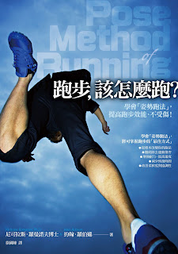
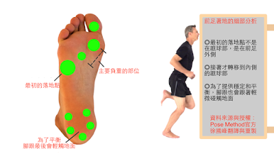

普遍對姿勢跑法最大的誤解是：把「前足著地」當成「踮腳跑」

《跑步該怎麼跑》這本書，在台灣已經出版 4 年了，演講會後或信箱裡總是有不少跑者提到姿勢跑法幫了他/她們許多，但也有許多跑者說這種跑法害他們的小腿很不舒服(疼痛或是受傷)，一問之下幾乎所有人的問題都是一樣的：他/她們都誤把「前足著地」當成「踮腳跑」，兩者的差別在於後者強迫腳跟在落地時不觸地，只用小腿撐住落下的衝擊→這當然會受傷啊！
這些跑者主要遺漏了姿勢跑法所一再強調的重點：前足著地只是當你做對了所有的事情之後的結果，它並非我們要主動追求的跑姿。
尼可拉斯博士的團隊傳來了一段關於「前足著地」的說明文字，仔細說明了這種著地方式的好處在哪，翻譯如下：
前足著地是跑步時最好的落地方式，但這並不是要你用腳尖落地或踮著腳跑。我們所說的「前足」是指腳掌前方圍繞著蹠骨和趾骨的部位。如果你觀察前足著地時腳底板的壓力軌跡，你會注意到落地點不是在蹠球部，而是在前足外側，接著才轉移到內側的蹠球部。壓力轉到蹠球部之後，為了提供穩定和平衡，腳跟也會跟著輕微碰觸地面，接著壓力轉移至前方。當你以此種方式落地，由於關節未鎖死，這讓你的肌肉可以吸收三倍體重的落地衝擊。而且因為你落在重心的正下方，所以剎車效應可以減到最低，關節也不再緊繃。前足著地轉換到關鍵跑姿的跑法是最有效率的移動方式，而且這也被證實能有效減少膝蓋 50%的異常負荷。此外，前足著地的支撐時間最短，也能夠最有效地利用肌肉肌腱的彈性，使你的每一步都更省力。
他們同時也傳來一張詳細的說明圖，我把它譯成中文重製，其中很清楚地說明了姿勢跑法所提倡的前足著地在實際落地時的軌跡為何：

其實著地方式不是我們在跑步時要主動追求的重點，它只是顯示跑步經濟性的一項重要指標
跑步的三個核心元素是：關鍵跑姿、落下和拉起，並沒有著地。也就是說著地並非姿勢跑法關心的重點。因為「前足著地只是『前傾』與『自由落下』的結果，並非我們要追求的技巧」，所以很多人以為姿勢跑法就是前足跑法（但事實並非如此）而只把腳跟著地改成前足著地，但這完全錯失了姿勢跑法的核心精神－－利用地心引力「自然落下」。既然是「自然」落下，就不該刻意追求。因為只要自然，前足著地這件事會自動發生；只要刻意，就會變成腳跟著地或踮腳跑。
若你把注意力放在前足著地這件事就不自然了，注意力應該放在快點把腳掌從後方拉回到關鍵跑姿，僅此而已！
姿勢跑法的重點其實不在於「怎麼著地」這件事，重點是怎麼快點『拉回』到關鍵跑姿！著地會自然發生，不用刻意而為。」落下與著地的過程應該是很自然的，在落下的過程中：放鬆的腳踝是腳趾低於腳跟，所以落下時自然前足先著地。此時若步頻低於 180bpm，接著腳跟也會輕微觸地；若步頻高於 180bpm，腳跟來不及著地就會離開，這不是踮腳，而是因為步頻太快了，快到腳跟來不及著地就離開。